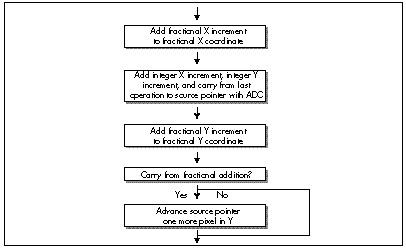
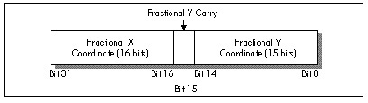

| Previous | Table of Contents | Next |
I’d like to emphasize that algorithmically and conceptually, there is no difference between scanning out a polygon top to bottom and scanning it out left to right; it is only in conjunction with the hardware organization of Mode X that the scanning direction matters in the least.
|
That’s what Zen programming is all about, though; tying together two pieces of seemingly unrelated information to good effect—and that’s what I had failed to do. Like Robert Heinlein—like all of us—I had viewed the world through a filter composed of my ingrained assumptions, and one of those assumptions, based on all my past experience, was that pixel processing proceeds left to right. Eventually, I might have come up with Chris’s approach; but I would only have come up with it when and if I relaxed and stepped back a little, and allowed myself—almost dared myself—to think of it. When you’re optimizing, be sure to leave quiet, nondirected time in which to conjure up those less obvious solutions, and periodically try to figure out what assumptions you’re making—and then question them! |

Figure 58.3 Texture mapping a single vertical column.
There are a few complications with Chris’s approach, not least that X-Sharp’s polygon-filling convention (top and left edges included, bottom and right edges excluded) is hard to reproduce for column-oriented texture mapping. I solved this in X-Sharp version 22 by tweaking the edge-scanning code to allow column-oriented texture mapping to match the current convention. (You’ll find X-Sharp 22 on the listings diskette in the directory for this chapter.)
Chris also illustrated another important principle of optimization: A second pair of eyes is invaluable. Even the best of us have blind spots and get caught up in particular implementations; if you bounce your ideas off someone, you may well find them coming back with an unexpected—and welcome—spin.
Excellent as Chris’s suggestion was, I still had work to do: Listing 58.2 is still more than twice as slow as John Miles’s code. Traditionally, I start the optimization process with algorithmic optimization, then try to tie the algorithm and the hardware together for maximum efficiency, and finish up with instruction-by-instruction, take-no-prisoners optimization. We’ve already done the first two steps, so it’s time to get down to the bare metal.
Listing 58.2 contains three functional parts: Drawing the pixel, advancing the destination pointer, and advancing the source texture pointer. Each of the three parts is amenable to further acceleration.
Drawing the pixel is difficult to speed up, given that it consists of only two instructions—difficult, but not impossible. True, the instructions themselves are indeed irreducible, but if we can get rid of the ES: prefix (and, as we shall see, we can), we can rearrange the code to make it run faster on the Pentium. Without a prefix, the instructions execute as follows on the Pentium:
MOV AH,[BX] ;cycle 1 U-pipe
;cycle 1 V-pipe idle; reg contention
MOV [DI],AH ;cycle 2 U-pipe
The second MOV, being dependent on the value loaded into AH by the first MOV, can’t execute until the first MOV is finished, so the Pentium’s second pipe, the V-pipe, lies idle for a cycle. We can reclaim that cycle simply by shuffling another instruction between the two MOVs.
Advancing the destination pointer is easy to speed up: Just build the offset from one scanline to the next into each pixel-drawing instruction as a constant, as in
MOV [EDI+SCANOFFSET],AH
and advance EDI only once per unrolled loop iteration.
Advancing the source texture pointer is more complex, but correspondingly more rewarding. Listing 58.2 uses a variant form of 32-bit fixed-point arithmetic to advance the source pointer, with the source texture coordinates and increments stored in 16.16 (16 bits of integer, 16 bits of fraction) format. The source coordinates are stored in a slightly unusual format, whereby the fractional X and Y coordinates are stored and advanced separately, but a single integer value, the source pointer, is used to reflect both the X and Y coordinates. In Listing 58.2, the integer and fractional parts are added into the current coordinates with four separate 16-bit operations, and carries from fractional to integer parts are detected via conditional jumps, as shown in Figure 58.4. There’s quite a lot we can do to improve this.

Figure 58.4 Original method for advancing the source texture pointer.
First, we can sum the X and Y integer advance amounts outside the loop, then add them both to the source pointer with a single instruction. Second, we can recognize that X advances exactly one extra byte when its fractional part carries, and use ADC to account for X carries, as shown in Figure 58.5. That single ADC can add in not only any X carry, but both the X and Y integer advance amounts as well, thereby eliminating a good chunk of the source-advance code in Listing 58.2. Furthermore, we should somehow be able to use 32-bit registers and instructions to help with the 32-bit fixed-point arithmetic; true, the size override prefix (because we’re in a 16-bit segment) will cost a cycle per 32-bit instruction, but that’s better than the 3 cycles it takes to do 32-bit arithmetic with 16-bit instructions. It isn’t obvious, but there’s a nifty trick we can use here, again courtesy of Chris Hecker (who, as you can tell, has done a fair amount of thinking about the complexities of texture mapping).
We can store the current fractional parts of both the X and Y source coordinates in a single 32-bit register, EDX, as shown in Figure 58.6. It’s important to note that the Y fraction is actually only 15 bits, with bit 15 of EDX always kept at zero; this allows bit 15 to store the carry status from each Y advance. We can similarly store the fractional X and Y advance amounts in ECX, and can store the sum of the integer parts of the X and Y advance amounts in BP. With this arrangement, the single instruction ADD EDX,ECX advances the fractional parts of both X and Y, and the following instruction ADC SI,BP finishes advancing the source pointer in X. That’s a mere 3 cycles, and all that remains is to finish advancing the source pointer in Y.

Figure 58.5 Efficient method for advancing source texture pointer.

Figure 58.6 Storing both X and Y fractional coordinates in one register.
Actually, we also advanced the source pointer by the Y integer amount back when we added BP to SI; all that’s left is to detect whether our addition to the Y fractional current coordinate produced a carry. That’s easily done by testing bit 15 of EDX; if it’s zero, there was no carry and we’re done; otherwise, Y carried, so we have to reset bit 15 and advance the source pointer by one scanline. The resulting program flow is shown in Figure 58.7. Note that unlike the X fractional addition, we can’t get away with just adding in the carry from the Y fractional addition, because when the Y fraction carries, it indicates a move not from one pixel to the next on a scanline (a single byte), but rather from one scanline to the next (a full scanline width).
| Previous | Table of Contents | Next |